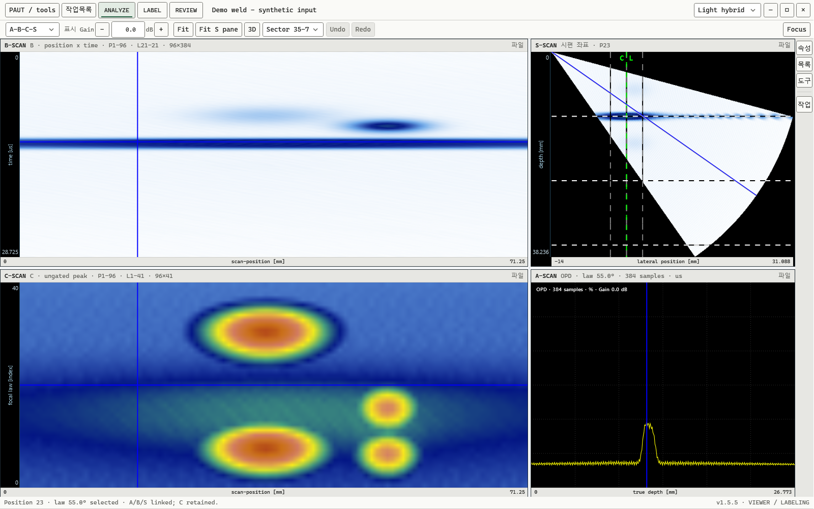

위치를 움직이면,
관점도 함께 이어집니다.
A-scan의 파형, B-scan의 단면, C-scan의 분포, S-scan의 각도. 하나의 위치를 각 화면에서 연결해 살펴봅니다.
시연에서는 실제 앱의 선택 위치가 바뀌며 각 스캔과 커서가 함께 갱신됩니다.
스캔과 좌표의 의미판독의 흐름을, 실제 화면으로.
연결된 스캔에서 한 지시를 따라가고,
확인한 위치를 라벨로 남기는 작업 공간.

화면만 닮게 그리지 않았습니다.
앱의 렌더링과 조작 결과를 그대로 담았습니다.
Inside the workbench
페이지를 내리면 실제 앱 장면이 이어집니다.
버튼과 슬라이더로 원하는 장면을 직접 살펴보세요.
실제 앱에서 생성한 장면을 재생합니다. 브라우저에서 검사 데이터를 계산하거나 저장하지 않습니다.
A-scan의 파형, B-scan의 단면, C-scan의 분포, S-scan의 각도. 하나의 위치를 각 화면에서 연결해 살펴봅니다.
시연에서는 실제 앱의 선택 위치가 바뀌며 각 스캔과 커서가 함께 갱신됩니다.
스캔과 좌표의 의미신호를 고르고, 라벨 초안을 살펴보고, 확인한 편집을 저장합니다. 보고 있는 후보와 저장된 라벨은 같은 상태가 아닙니다.
실제 앱에서 실행한 편집 전·초안·저장 후 장면을 순서대로 확인할 수 있습니다.
최종 반영은 사람의 선택으로.실제 3D 렌더러의 카메라를 움직여 얻은 장면입니다. 슬라이더로 시점을 바꾸며 신호의 공간적 관계를 살펴보세요.
Physical, Unfolded, native P/L/S는 좌표 의미가 다릅니다. 3D 표현 자체가 교정된 결함 치수나 인증을 뜻하지 않습니다.
평면 이미지를 돌린 연출이 아닌, 실제 렌더링.여러 입력 계열을 같은 작업 공간에서 살펴봅니다. 원본의 취득 좌표와 형식별 의미는 구분해서 유지합니다.
지원 범위는 형식 버전과 취득 메타데이터에 따라 달라집니다. 시연은 별도로 만든 합성 입력을 사용합니다.
표시 Gain은 화면의 진폭 표현을 바꾸고,
원본 신호와 측정값은 그대로 유지합니다.
한 검사 파일의 여러 라벨을 확인하고, 변경한 초안과 저장한 결과를 구분합니다. 후보 탐색부터 명시적인 반영까지 판단의 경계를 놓치지 않습니다.
선택적인 후보 탐색 기능입니다. 별도 모델·런타임과 사용 동의가 필요하며, 결과는 사람이 검증합니다. 자동 합격 판정이나 라벨 자동 승인을 의미하지 않습니다.
제품 시연을 이해하기 위한 안내입니다.
네. PAUT AI의 실제 Windows 앱 코드가 렌더링한 화면입니다. 공개용 합성 데모 입력을 사용했으며, 현장 검사나 고객 데이터는 아닙니다. 생성형 이미지로 앱 화면을 그린 것이 아닙니다.
이 페이지는 실제 앱에서 만든 장면을 탐색하는 인터랙티브 제품 시연입니다. 슬라이더는 캡처된 장면을 선택합니다. 원본 분석·라벨 저장·3D 계산은 Windows 앱에서 수행되었으며 브라우저에서 새로 실행되지 않습니다.
연결된 A/B/C/S 스캔은 같은 취득 위치를 여러 관점으로 보여줍니다. Physical은 기하와 반사 경로를 사용하는 표현, Unfolded는 전개 공간, native P/L/S는 취득 인덱스 공간입니다. 서로 같은 XYZ 좌표나 교정된 치수로 해석하면 안 됩니다.
이 공개 저장소에는 제품 소개 자료만 있습니다. 앱 소스는 비공개이며 설치 프로그램과 모델 가중치는 포함하지 않습니다. 연구용 AI 사용에는 별도 모델·실행 환경과 검사자의 검증이 필요합니다.